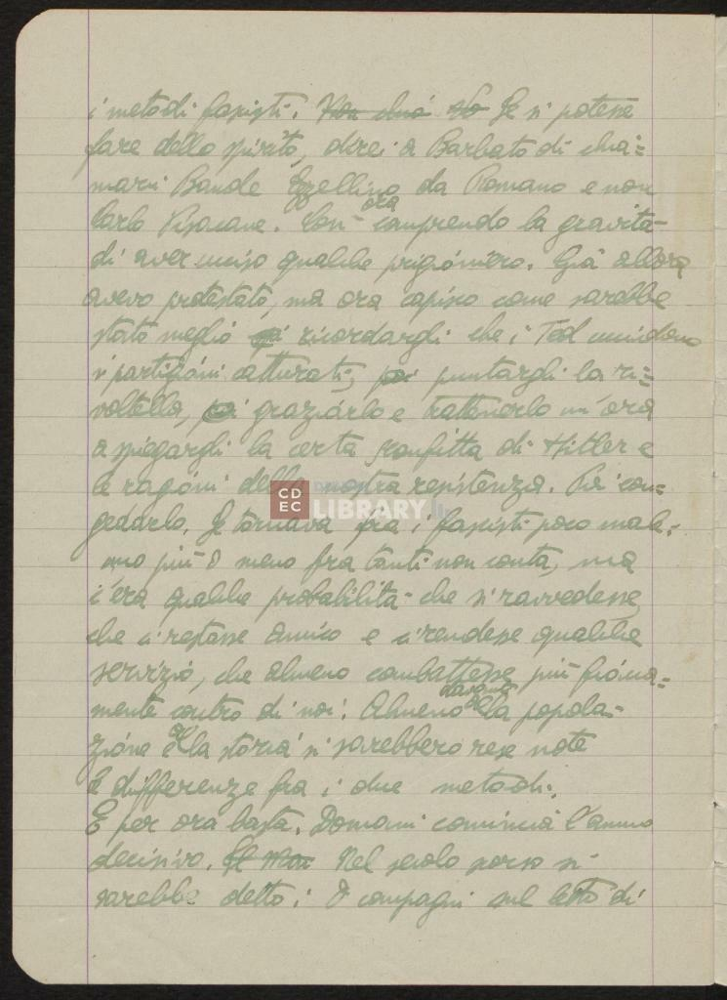
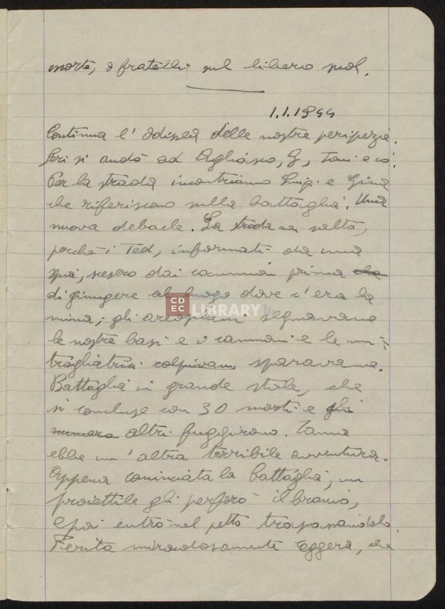
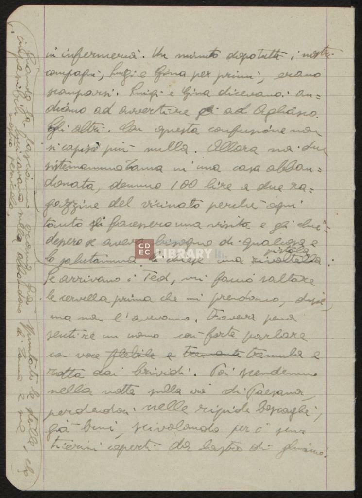

Titolo:Diari Artom Autore:Emanuele Artom Data:
31 dicembre 1943 - 01 gennaio 1944
Lingua:Italiano
Descrizione fisica del diario
Supporto:
Fogli di carta
Pagine:
Il manoscritto è preceduto da due pagine contenenti la lettera di Amalia
Segre Artom e una seconda parte contenente il diario
diEmanuele Artom, che si compone di 172 pagine.
Condizioni:
Le pagine del diario sono ben conservate.
Autore:
La prima pagina del manoscritto consiste nell'epigrafe di Amalia Segre Artom
scritta a penna e in corsivo.
Il diario di Emanuele Artom parte dalla seconda pagina del manoscritto.
122

1
i metodi fascisti . Se si potesse
2
fare dello spirito , direi a Barbato di chia = 3
marci Bande Ezzelino da Romano e non
4 Carlo Pisacane . così ora comprendo la gravità
5
di aver ucciso qualche prigioniero . Gia allora
6
avevo protestato , ma ora capisco come sarebbe
7
stato meglio ricordargli che i Tedtedeschi uccidono
8
i partigiani catturati ,???
puntargli la ri = 9
voltella ,???
graziarlo e trattenerlo un'ora
10
a spiegargli la certa sconfitta di Hitler e
11
le ragioni della nostra resistenza . Poi con = 12
gedarlo . Se tornava tra i fascisti , poco male : 13
uno più o meno fra tanti non conta , ma
14
c'era qualche probabilità che si ravvedesse , 15
che ci restasse amico e ci rendesse qualche
16
servizio , che almeno combattesse più fioca = 17
mente contro di noi . Almeno davanti alla popola = 18
zione e alla storia si sarebbero rese note
19
le differenze fra i due metodi . 20
e per ora basta . Domani comincia l'anno
21
decisivo . Nel secolo scorso si
22
sarebbe detto : O compagni sul letto di
123

1
morte , o fratelli sul libero suol . 2 3
1/1/1944
4
Continua l'odissea delle nostre peripezie . 5
Ieri si andò ad Agliano ,GGiorgio, Toni e io . 6
Per la strada incontriamo Luigi e Gina 7
che riferiscono sulla battaglia . Una
8
nuova debacle. La strada non saltò , 9
perchè i Tedtedeschi, informati da una
10
spia , scesero dai camion prima che 11
di giungere al luogo dove c'era la
12
mina ; gli areoplani segnavano
13
le nostre basi e i cannoni e le mi = 14
tragliatrici colpivano sparavano . 15
Battaglia in grande stile , che
16
si concluse con 30 morti e gli 17 numero altri fuggirono . Zama 18
ebbe un'altra terribile avventura . 19
Appena cominciata la battaglia , un
20
proiettile gli perforò il braccio , 21
e poi entrò nel petto trapassandolo . 22
Ferita miracolosamente leggera , che
124

1
in infermeria . Un minuto dopo tutti i nostri
2
compagni , Luigi e Gina per primi , erano
3
scomparsi . Luigi e Gina dicevano :
"
an An = 4
diamo ad avvertire gli ad Agliasco . 5 Gli gli altri . Con questa confusione non
6
si capisce più nulla . Allora noi due
7
sistemammo Zama in una casa abban = 8
donata , demmo 100 lire a due ra = 9
gazzine del vicinato perchè ogni
10
tanto gli facessero una visita e gli chie = 11
dessero se avesse bisogno di qualcosa e
12
lo salutammo . Ci chiese una rivoltella pistola . 13
Quando lo lasciammo erano gia spuntate le stelle , che
14
impassibili luccicavano sull'abbandono di Zama e sul
15
nostro pericolo . 16
"
se arrivano i Tedtedeschi, mi faccio saltare
17
le cervella prima che mi prendano , disse , 18
ma non l'avevamo . Faceva pena
19
sentire un uomo così forte parlare
20
con voce flebile etremante tremula e
21
rotta dai brividi . Poi scendemmo
22
nella notte sulla via di Paesana , 23
perdendoci nelle ripide boscaglie , 24
gia buie , scivolando per i sen = 25
tierini coperti da lastre di chiaccio .
Nome di PersonaAbbreviazioneAggiunta AutoreErroreCorrezioneLuogoElemento cancellato